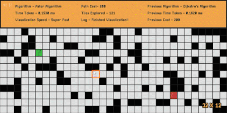
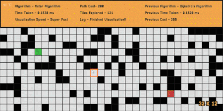

Projects
Pathfinder Visualizer (C++ / SFML)
Visualizes the Breadth-first, Depth-first, Dijkstra's and A* algorithms to find a path. Utilizes design patterns (strategy, adapter and facade) and premake to manage the project.


 

Narrative-driven Fighting Game (C# / Unity3D)
A humorous take on a fighting game overfilled with narrative drama.
I implemented the Event system, Scene manager, Input system, Dialogue system, Skill tree, AIs, NPCs and code architecture.
Created documents and managed scrums, team meetings and team board(Assembla).


Turn-based Strategy Game (C++ / UE4)
A turn-based strategy game laid out on a grid inspired by the Hitman Go. I implemented the tilemap, turn system, character classes, camera system and AI (behavior tree). Created UML, process view and design documents. Created art assets and designed levels.


Game Engine (Modern C++)
A passion and learning project in a very early development stage.
So far, I have implemented the very high-level engine architecture, an Event system, Input system and ECS. Currently working on basic OpenGL renderer.
Library dependencies – GLFW, GLAD, Dear ImGui, Spdlog, GLM.

Stealth Game (C# / Unity3D)
An atmospheric mobile game featuring unique enemies, and environment interaction with
some story elements in early development.
So far, I have implemented an Event, Input, Level, and UI system.
AI uses a combination of a Behavior tree and a State machine.
AI relies on visual, auditory and environmental inputs to detect the player.

Other Projects
Small projects allowing me to experiment with Paper2D(UE4), unity shader and some simple algorithms.